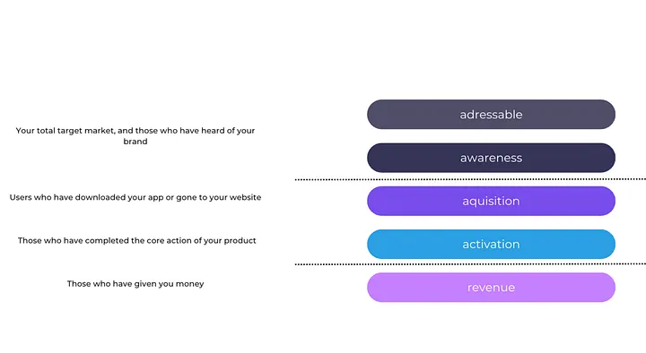
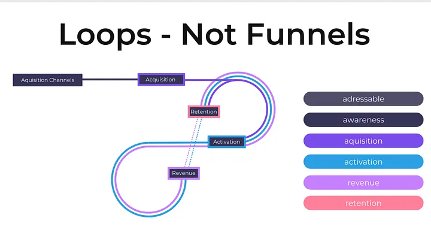

To keep close to the startup community, I chat with founders often. I'll frequently get asked about what growth is, how you apply it to startups, and when you should focus on it. So to help with those conversations, I put together a quick “Growth 101” doc to answer some of the most common questions I get from founders. As a side benefit, my parents might have some idea of what I actually do for work.
What is Growth?
Growth is one of those silicon valley business terms that has made it into the general business lexicon, yet most people don't know what it actually means. This is partially just due to the complexity and breadth of what a Growth function actually focuses on. To start, let's talk about the traditional marketing funnel. Below you can see what are called “pirate metrics”. This is because if you look at the first letter of each word it spells AAAAR (who said marketers don't have a sense of humor?).
The normal way business function is by splitting these stages of a user funnel into different functions . Addressable, awareness, and acquisition are run by marketing or sales, and activation and revenue are owned by product. For bigger companies, this can be split even further, with each step of the funnel having a sub-team. The downside of this is that if you're looking at each step individually, there is a tendency for user strategy to become very siloed, leading to a disjointed experience for the user. That is where the concept of a Growth org comes in. Growth flips the idea of a siloed funnel on its head and instead focuses on the entire user flow as a whole. The distinction I like to make here is “Loops not Funnels”. (I got this concept from a previous boss I had at Cameo — thanks Evan).
